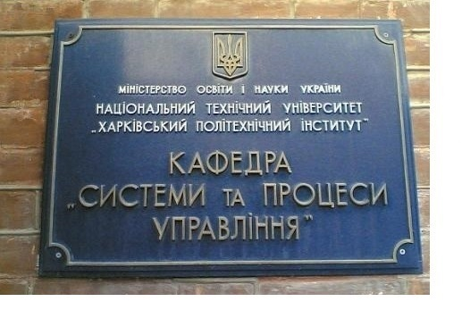

В начале 60-х годов в период бурного развития ракетно-космической отрасли, в Харькове создается мощная и перспективная организация КБ электроприборостроения, ныне НПО <Хартрон>. Ей было поручено создание современных систем управления ракет - носителей, а позже и космических объектов.
На протяжении более четверти века эту организацию возглавлял известный ученый, доктор технических наук, академик, Лауреат Ленинской и Государственной премий, дважды Герой Социалистического Труда Владимир Григорьевич Сергеев
Крупнейший технический вуз Украины ХПИ, при наличии в Харькове такой современной организации с большим научным и техническим потенциалом, не мог остаться в стороне и не принять участие в подготовке специалистов для аэрокосмической отрасли. Тесное взаимодействие КБ электроприборостроения и нашего института вскоре дало результаты - в 1964 году на инженерно-физическом факультете открывается специальность <Динамика полета и управление движением ракет и космических аппаратов>.
Для обеспечения учебного процесса по этой специальности 1 февраля 1964 года открывается кафедра <Автоматическое управление движением> (АУД). Она занялась подготовкой инженеров-механиков-исследователей по указанной специальности. Заведующим кафедрой становится д.т.н., профессор Арег Вагаршакович Дабагян.
Тогда же, в 1964 г., между КБ электроприборостроения и ХПИ заключается договор о целевой подготовке специалистов инженеров-механиков-исследователей по специальности <Динамика полета и управление> для конструкторского бюро. В основу создания этой специальности был положен опыт подготовки инженеров-исследователей, выпускавшихся на инженерно-физическом факультете кафедрами динамики и прочности машин (на которой и работала научная группа проф. А.В. Дабагяна) и физики металлов.
Начиная с выпуска 1968 г. (группа, которая была набрана на 3-й курс в 1964 г.), специальность <Динамика полета и управление> на сегодняшний день окончили более 820 инженеров-исследователей. Более 130 выпускников стали учеными - кандидатами и докторами наук, которые работают в различных отраслях народного хозяйства Украины, в том числе и в НТУ <ХПИ> (доктора технических наук, профессоры М.Д. Годлевский, А.С. Куценко, Е.Е. Александров, доктор экономических наук, профессор В.Я. Заруба).
Большая часть выпускников трудится в НПО <Хартрон> (ранее КБ электроприборостроения). Они составляют основной интеллектуальный потенциал предприятия. Многие из них принимали непосредственное участие в создании систем управления ракет - носителей и космических аппаратов для более чем 800 объектов (к.т.н. А.Н. Калногуз - первый заместитель генерального директора, А.Я. Макаренко - с.н.с., А.Г. Чигирев - директор по финансам, к.т.н. Ю.А. Кузнецов - начальник сектора, Е.В. Галкин - ныне директор по кадрам фирмы <Вестрон>, В.П. Московченко - начальник сектора и многие другие).
Кафедра Cистем и процессов управления (до 2001 года — автоматического управления движением) была создана в 1964 году в связи с актуальными потребностями технического прогресса и острой необходимостью подготовки инженеров высочайшего класса с фундаментальной механико-математической подготовкой.
У истоков созданной в те годы специальности "Динамика полёта и управление движением ракет и космических аппаратов" стояли Герой Социалистического Труда, генеральный директор НПО "Электроприбор" академик В.Г. Сергеев и доктор технических наук, профессор А.В.Дабагян - ныне заслуженный работник народного образования, почетный доктор НТУ "ХПИ". Значительный вклад в её становление и развитие внесли известные ученые - лауреат Ленинской премии генеральный конструктор АО "ХАРТРОН" Я.Е. Айзенберг, профессора В.Н.Щербина, В.П.Аврамов, которые в разные годы работали на кафедре.
С 1977 года кафедру возглавляет лауреат Государственной премии, заслуженный работник высшей школы Украины, почетный доктор НТУ "ХПИ", доктор технических наук, профессор Е.Г.Голоскоков - известный специалист в области динамики и прочности машин, а также управления движущимися объектами.
На протяжении этих лет кафедра организует новые специальности, меняется её название, но неизменным остается одно — высокий уровень подготовки студентов. Кафедра ведет работу по специализациям: "Оптимизация и управление полётом" и "Организация и оптимальное управление технологическими процессами".
За последние 30 лет кафедра подготовила около 600 инженеров-механиков-исследователей, из которых кандидатами наук стали более 100 человек и шесть человек — докторами наук. Выпускники кафедры создают уникальные системы управления для аэрокосмических объектов, объектов атомной энергетики, турбиностроения и других наукоёмких отраслей. Целевым образом готовятся специалисты для базовых предприятий АО "ХАРТРОН" и ПО "Монолит" (Харьков). Среди известных выпускников кафедры профессора М.Д.Годлевский, В.Я.Заруба, А.С.Куценко, Е.Е.Александров, директор НПП "ХАРТРОН-Аркос" А.Н.Колнагуз, бывший заместитель директора НПО "Электроприбор" А.Борисовский и многие другие.
На кафедре ведется активная научно-исследовательская работа. Основным научным направлением является "Алгоритмическое и программное управление механическими системами и технологическими процессами". Кафедра принимает действенное участие в научно-исследовательских работах по программе фундаментальных и поисковых исследований (НАН Украины), программе создания систем управления аэрокосмическими объектами.
Интересные работы выполняются на кафедре в сотрудничестве и по заданию КБ "ХАРТРОН-Аркос". Многие хоздоговорные темы, разрабатываемые совместно в рамках государственной программы "Теоретические основы проектирования и создания перспективной авиационно-космической техники", внедрены на предприятии.Кафедра успешно развивает и совершенствует международные связи. Так, на кафедре проходят подготовку аспиранты и студенты из Китая по специальности "Прикладная математика".
Полученное студентами инфиза фундаментальное образование по математическим и компьютерным дисциплинам вот уже не один десяток лет позволяет им стать специалистами высокой квалификации с мощным творческим потенциалом, мобильными в усвоении новых знаний и приложении своих профессиональных сил в различных областях науки.
Кафедра систем и процессов управления (нынешнее название куафедры) продолжает сотрудничество с НПО <Хартрон> в деле подготовки кадров, в том числе и высшей квалификации, проводит научные исследования в области навигации и разработки систем управления космических аппаратов. По специальности на кафедре обучаются магистранты, аспиранты и докторанты, в том числе и из дальнего зарубежья. В 2003 году аспирант из Китайской Народной Республики Лю Хуэй защитил диссертацию на тему <Разработка эффективного гиросилового управления переориентацией упругого космического летательного аппарата>.
Учеными кафедры проведены исследования, связанные с разработками систем управления блока <Заря> - первого модуля международной космической станции <Альфа>, спутника <Аркон> и орбитальной солнечной обсерватории